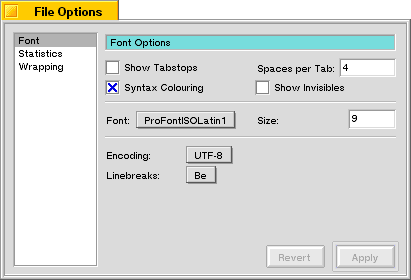
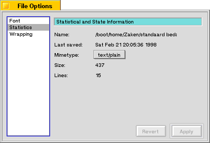
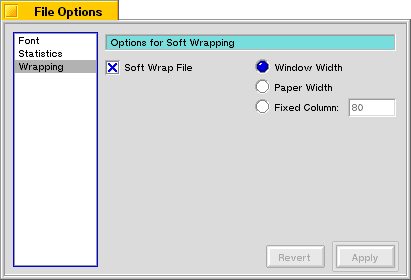

File Options... Dialog
The File Options... Dialog is a multi pane dialog, which means that several pages with options are available. You can switch between these pages by selecting names in the list on the left-hand side of the Dialog.

The first pane gives you the option to change several options like font, size, etc.
Show Tabstops will enlarge the toolbar to show the tabstops. Spaces per Tab is the amount of space characters a tabstop is wide.
Syntax Colouring when checked will try to display the current file with syntax colouring; a useful feature when you are working with structured files.
Show Invisbles will display spaces, tabs and return characters in an alternate colour and with the characters you assigned in the Preferences Panel.
Font and size for the current file can be changed.
If you change Encoding, the text will not be altered but an attempt will be made to draw the text interpreting the bytes in it according to the characterset chosen.
Linebreaks can be changed. Since Macintosh, DOS and Unix/Be all use different linebreak character combinations, you can change them here to make files readable on other platforms. Pe will automatically convert linebreaks when opening files from other platforms and restore them when you save a file.

On this page you see some information about the current file like name, date and time of the last save, size and the number of lines it contains.
You can also change the mimetype of the file here. The types displayed in the list are the ones you entered in the preferences panel.

And the last pane gives you the option to change the wrapping for the current file, just as in the Preferences dialog.
Last updated: 05/17/98
Copyright 1997,1998, © Hekkelman Programmatuur,
info@hekkelman.com